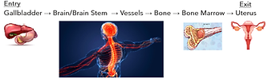
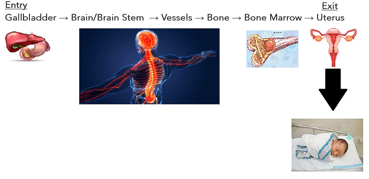
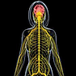
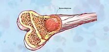
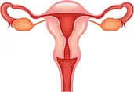

Updated: Sep 30, 2023
The six extraordinary organs are sometimes referred to as the six curious organs, especially in the work by Jeffrey Yuen. In this article we are going to look deeper than we are generally taught about the extraordinary organs. We are going to put them into a specific order. Creating a meridian flow that extends from the primary channels.
If you have not heard me explain how the Liver/Gallbladder brings refined blood, mixed with old lymphatic fluid that is mixed in the Heart to the Brain, please review my 12 primary channel continuum video. (Linked) https://youtu.be/nYHgaCpS9QQ
Lets look at the extraordinary or curious organs as their own meridian or flow cycle.
Going from:
The Gallbladder combined with the Liver is where the 12 primary channel continuum gains access to the Brain. The GB acts as a link between the primary meridians (Ying level), and the 6 extraordinary organs (Yuan level). You may have noticed already that the GB is the only primary organ that is both a primary organ and an extraordinary organ. This gives it special status to act as a portal or a bridge to the Yuan level of the body.
The Liver, the Yin/Yang pair to the Gallbladder, is the last place our blood is refined before it returns from its journey away from and back to the Heart. In the Heart our refined LR/GB blood is mixed with our old lymphatic fluid. Our lymph is constantly being recycled by oue body. If we are full of latent pathogens and unresolved issues that have become toxic, our lymph will also be toxic.
During this refinement of the Liver Blood the liver, being the last in the continuum, has to pick up the slack from all other improperly functioning 12 primary organs so that the blood entering the heart is “pure”, “clean”, or “refined”…..for, the next junction point from the Heart, is to be pumped directly into the Brain.
It is to be understood that the Brain and the Brain stem are actually one in the same organ. Cerebrospinal fluid from the Brain travels all the way down the spine. If there is inflammation or toxicity in the brain, this accumulated waste material and heat will become circulated down the spinal column and eventually spread over time to the peripheral nervous system manifesting in the form of demyelination.
In my other video linked above I show medical journals how CSF (Cerebrospinal Fluid) actually flows in minute amounts into the peripheral nerves. (In some areas at rates as fast as cm/ per hour) The CSF, a yin fluid lubricates the Axonal Transport system within the nervous system of our body.
The Brain / the Vessels / and the Bone Marrow, are all considered here to be what we tend to call “Marrow” in Chinese medicine. They are in fact, including the bone, all made of essence, which is the densest material within the body.
Side note: It has been contested over the centuries the terminology of the character Vessels (脉, Mài) I do not believe it refers to the blood vessels. I contend like many others in the past that it is intending the channels of the nervous system, which properly fits into the scheme of the continuum.
The final organ in the continuum of the six organs is the “Uterus”. The uterus is the womb or the void space that is used to create new life. If you have a careful eye you will noticed that the First and the Last of the Extraordinary Organs stand out and are different from the others. Neither of the two are made of marrow and bone, and together act as Entry and Exit points for the entire system.
We are following a system that is made of the most dense material in the body. This dense material is made up of our Essence that is borrowed from our ancestors and that which we have accumulated in this lifetime. The question that needs to be asked in order to see this great rivers uninterrupted flow is, what is more dense than bone?
The only material that the human body produces that is going to be more compact and more dense than bone is a New human being. What we implant into our bones is our genetic material, our blueprint, our DNA, our story. Stored inside of our bones is are our most totipotent stem cells.
What we implant into the womb is actually the most dense of all our human creations and that is the creation of new life. We create babies. These babies are our “Offspring” to continue on our legacy. Our offspring is instilled with the most concentrated spark of life possible, soul, alongside the entire blueprint, materials and space for its creation.
This is the message that I have received about the Six Extraordinary Organs. They act together and they teach a very powerful message. To understand them is to understand not only the cyclical flow of pathogens, but also the cycle flow of life force from past and current lifetimes into future lifetimes. It is one way of how to look at our blood lineage as an uninterrupted river of consciousness and that of its collected experiences.
Our offspring is how we carry on our Legacy. We create a new body for a new soul to inhabit and finish off, or continue on what we have left off for it.
Gallbladder (胆, Dǎn): The Gallbladder is recognized as an extraordinary organ in TCM and is closely related to the Liver. It is responsible for storing and excreting bile and is associated with gaining access to the Brain.
Vessels (脉, Mài): The Vessels are a contended part of the extraordinary organ system. From this point of view we will look at them as the nervous system extending from the brain and brain stem.
In TCM, the Bones are considered an extraordinary organ as they provide support, protection, and structure to the body. They are associated with the Kidneys and are believed to store essence (Jing), govern growth, and maintain vitality.
Bone Marrow (髓, Suǐ): The Marrow is considered the foundation for producing Blood and nourishing the body. It is associated with skeletal development, bone health, and the production of essential components of the blood.
Uterus (宫, Gōng): The Uterus is not limited to the female reproductive system; it encompasses both the uterus and the entire pelvic region. It is associated with fertility, menstrual cycles, and plays a role in the circulation of Qi and Blood.